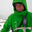

FOSSGIS2010 - 22
FOSSGIS 2010
Freie und Open Source Software für Geoinformationssysteme
| Speakers | |
|---|---|
|  | Arnulf Christl |
| Schedule | |
|---|---|
| Day | Dienstag - 2010-03-02 |
| Room | Großer Hörsaal (Geb. 66, E33/34) |
| Start time | 17:00 |
| Duration | 00:30 |
| Info | |
| ID | 96 |
| Event type | Lecture |
| Track | Vorträge |
| Language used for presentation | German |
OSGeo, Ziele, Mission und Aufgaben
Einführung in die OSGeo

Die Open Source Geospatial Foundation, kurz OSGeo, ist eine non-Profit Organisation, die sich für die Förderung von Freier und Open Source Software in der räumlichen Datenverarbeitung einsetzt.
OSGeo bietet ihren Projekten finanziellen, organisatorischen und rechtlichen Beistand in allen Fragen der Entwicklung und Verbreitung, die nicht durch bestehende Mechanismen abgedeckt werden. Als unabhängige, rechtlich eigenständige Organisation bietet sie ihren Mitgliedern die Sicherheit, dass die investierte Zeit, beigesteuerter Code, Dokumentationen und auch finanzielle Mittel sinnvoll für die gemeinsamen Ziele eingesetzt werden. Die OSGeo kümmert sich auch um die Verbreitung richtiger Informationen über das Freie Software Konzept und Open Source Entwicklungsmethodologien und nimmt Stellung zu öffentlichen Anfragen. Die Gemeinschaft profitiert auch durch bessere Kontakte zwischen den Softwareprojekten sowie besserer Kooperation und Integration der verscheidenen Werkzeuge.
Folgende Punkte beschreiben die konkreten Aufgaben und Ziele der OSGeo:
* Bereitstellung von Resourcen für OSGeo Projekte- z.B. Infrastruktur, Finanzierung, Rechtsbeistand.
* Zugang zu Geodaten - ohne Daten ist auch Freie Software wertlos.
* Förderung der Nutzung von Open Source Software in der räumlichen Datenverarbeitung (nicht nur der OSGeo Projekte) - z.B. Öffentlichkeitsarbeit, Schulung, Werbung.
* Implementierung von offenen Standards und Standard-basierter Interoperabilität in OSGeo Projekten.
* Hoher Qualität der Projekte, um die Marke OSGeo zu stärken.
* OSGeo und anverwandte Software für Endbenutzer zugänglicher zu machen - z.B. Binärpakete und übergreifende Dokumentationen erstellen
* Unterstützung für die Nutzung von OSGeo Software in der Ausbuldung durch vollständige Studien- und Lehrpläne, Öffentlichkeitsarbeit und Support.
* Ermutigung zur Kommunikation und kooperation wzischen OSGeo Gemeinschaften unterschiedlicher Sprachen (z.B Java/C/Python) und Betriebssysteme (z.B. GNU Linux, Win32, Unix, MacOS).
* Verbreiterung der Gemeinschaften weltweit durch Übersetzungen und Internationalisierung der Software.
* Die Durchführung der jährlichen Hauptkonferenz FOSS4G der OSGeo in Kooperation mit regionalen und internationalen Veranstaltungen (z.B. EOGEO, FOSSGIS).
* Die Verleihung des Sol Katz Preises für besondere Leistungen in der OSGeo Gemeinschaft.
| Vorträge | Vorträge (Meist 20 Minuten plus Fragen+Antworten) |
| OSM-Vorträge | Vorträge im OSM-Teil (Meist 20 Minuten plus Fragen+Antworten) |
| Workshops | Kostenpflichtige Workshops am Rechner (90 Minuten) |
| Community Sessions | Moderierte Vortrags- und Diskussion-Veranstaltung (60-90 Minuten) |
| Anwendertreffen | Treffen für Anwender bestimmter Software |
| Developer-Treffen | Treffen für Entwickler bestimmter Software |